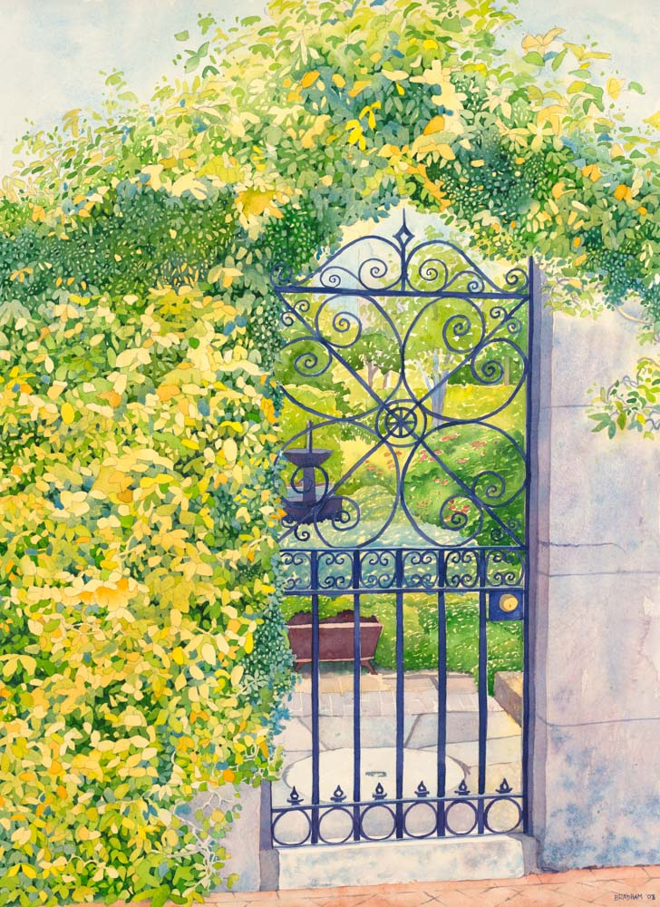

Prose
The Gate with Two Hasps

Carlo Russo and the Professor stood each his side of the fence, which divided them no longer vertically, but in a flat band of redwood planks and framing eastward of its once upright position, atop the bare soil where the Professor's beloved dahlias had just retreated into their subterranean winter sleep.
"The winds have cracked their cheeks," said the Professor.
Carlo shrugged. "Don't know about cheeks," he said, "but was a pretty good gust took it down."
His eyes avoiding Carlo's, the Professor nodded. Carlo noted his discomfort. The fence had withstood forty-five winters since Carlo and his late wife, Carolina, had bought the house, five years before the Professor his. Not the Professor, not Carlo nor Carolina knew who had built it. The planks had been on the Professor's side, though, the frame on Carlo's. To Carlo this indicated it was the Professor's to replace. In the eyes' avoidance Carlo saw that the Professor shared this understanding. Carlo sympathized; this was not the Professor's area of expertise. It wasn't Carlo's, either. He was a marble mason, not a carpenter. But his hands knew tools, and, retired, he had ample time to figure things out.
"I'll replace it," he said, "if we go halves on lumber and hardware."
The Professor's ragged gray eyebrows arched, and now he looked Carlo in the eye. "Why, thank you so much, Carlino!" he said.
Carlo had another reason to ask for the work, which for now he guarded in himself.
"You can thank me when it's done," he said.
Carlo knew an actual name for the Professor: Bert. Whether this was his given name in its entirety, or short for Bertrand or Albert or Gilbert or something else, Carlo had never known. Carlo called him "Professor" from respect. He knew the title was inexact. The Professor seemed to Carlo some sort of itinerant scholar. Carlo had difficulty keeping track of where the Professor taught; now a community college in Oakland, no, in Hayward, or maybe Fremont. Carlo had gone from high school into an apprenticeship in his family's trade. Knowing nothing of academia, he had no formal name for what the Professor taught. English, he supposed. The Professor dressed as Carlo imagined a professor would: Baggy gray wool trousers of sometimes duplicate creases, brown brogues rarely unscuffed, long-sleeved dress shirt with button-down collar in a plain ecru, tieless, the button at the throat always undone, and – most important for Carlo's conception of the uniform – brown tweed sport jacket, leather-patched at the elbows.
The Professor on returning home shed scholar fatigues for the mufti of loose, faded jeans and a midweight moth-holed fog-gray wool sweater against the typical cool of a San Francisco evening. He wielded then an asparagus knife against the deeper roots of his flower garden's weeds, or a dibble to hollow homes for bulbs in the soil of palaeodune sand, or he fussed with scissors and pruning shears among blooms and twigs. Carlo filled his own garden with vegetables, the lettuces and greens and roots and snow peas and herbs that thrived in the wind and fog. Years of experiment had found the one corner of the garden where tomatoes in pots and hills of zucchini fruited. A tree of green figs presided over this practical order. Despite pragmatic inclinations, Carlo respected the extravagances of the Professor's blooms.
Several evenings in fall and winter every year the Professor donned vestments as ritualistic as the albs, cinctures, stoles, and chasubles of the priests of Carlo's youth. The Professor loved opera. He assisted at it in crispest black and white, bow-tied, French-cuffed with onyx cufflinks, his cummerbund in satin and satin also at jacket lapels and in a stripe down the outside of trouser legs, which for this were creased precisely. His hair when he unwound himself from the snug confines of his aging Subaru after a day of teaching was in strands that in thinning and graying over the years had displayed desultory use of a comb. On opera evenings the hair had just visited the barber. Its line across the nape was flawless. It stopped sharply even with the midpoint of the tragus of each ear. Something restrained it so that gusts of wind between his front door and the Subaru rarely stirred it. The polish of his shoes was so complete that their black flashed with the colors of their surroundings.
Carlo had some understanding of this devotion. The Russo family had a history with opera – or rather, a particular opera. Through the efforts of the librettist Arrigo Boito, the composer Giuseppe Verdi had been coaxed from retirement. He had committed his new opera, Otello, to a première at La Scala in Milan. There Carlo's great-grandfather Giulio, though still apprentice, was making his reputation in marble masonry, the trade he would carry later to San Francisco. As opening night approached, portraits of the soprano who would embody Desdemona, Romilda Pantaleoni, circulated through Milanese hands and came into young Giulio's calluses. Unmarried, ten years from continuing the line that would be Carlo's, Giulio felt he would do anything for a night with this Romilda. He grasped his realities. He believed himself handsome – others had told him so – but he had little education, and little money, and from work his hands were large out of proportion to his body and hard, and his skin was dark even in winter from a life in the sun. He calculated that the closest he could come to la bella Romilda – and this only with great effort – was a seat high up in La Scala's loggione. From there the object of his desire might be distant, but her body would rise to his in her soprano. He knew one of the loggionisti, who kept accounts for a broker of pink Candoglia marble. He pleaded for the man's assistance. The man, moved by his passion, promised it.
Giulio ate old bread. He drank wine nearly vinegar. He exceeded Lenten rigors out of season by going without not just meat, but fish, until the masons who sweated beside him, noting his sacrifice, hearing its reason, and from affection for the young man and respect for his work, shared meals with him.
His discipline did not save enough. He borrowed on all hands. A joke about what he might have offered as surety had earned Carlo's father, then a teenager, a stiff slap from his grandfather, Giulio's son, whose hands were almost as hard as the marble they worked. The accepted family telling was that even the most practical of Milanese master masons had figured value in encouraging a sense of beauty – and one of indebtedness – in a young mason of clear talent.
So a February night in 1887 found young Giulio seated beside the marble broker's accountant when the house lights went down and the orchestra erupted into storm and the chorus of Cypriots and their former governor Montano and the captain Cassio described the perilous approach of Otello's ship.
Not long after, Romilda's voice did ascend the rows of the loggione and press itself against the marble mason's chest.
At the end of almost three hours – all the Russo family, throughout its generations, knew the words, however little Italian they had – the Moor, having opened his heart with a dagger, sang,
Pria d'ucciderti… sposa… ti bacai.
Or morendo… nell' ombra in cui mi giacio…
un bacio… un bacio ancora…
ah!... un altro bacio…
The curtain fell. The curtain rose. The singers bowed, bowed again, bowed again and again. Then a chorist drew the composer Giuseppe Verdi himself onto the stage. La Scala roared. Around him the young marble mason Giulio Russo saw movement among the loggionisti toward the stairs and exits and heard shouts about the carriage, the master's carriage. Still feeling Romilda's soprano throughout his flesh, he joined the flow of joy to the street.
He found himself like a horse in the traces of that carriage, the horses having been unharnessed from it, and he, among a score at least of others but probably strongest of them, pulled il Maestro Verdi from opera house to hotel, while the pavement itself cheered and sang.
The story was a Russo family heirloom. With variations depending on teller, audience, and occasion it was recounted to children and grandchildren, to girlfriends and boyfriends, to new in-laws, to uncomprehending pre-adolescent girls at slumber parties, to strangers on Muni buses, and once, much abbreviated, somehow in making a point at a union meeting of the Bricklayers and Allied Crafts Local 3. Carlo's father recounted it no less frequently and with no less familial piety than any other Russo. Nonetheless when he was large and strong enough to fend off a slap he returned to tormenting Carlo's grandfather, now by singing in falsetto, in a key too low but high enough so that his voice cracked in the upper register,
Piangea cantando nell' erma landa.
Piangea la mesta,
O Salce! Salce! Salce!
Sedea chinando sul sen la testa,
Salce! Salce! Salce!
Cantiamo! Cantiamo!
Il salce funebre sarà la mia ghirlanda.
Denied his physical slap, grandfather would at every opportunity call father's favored singer by his glorious name at baptism, Anthony Dominick Benedetto, and not by his stage name, that capitulation to anglophone world dominance. And hadn't il Maestro brought home the tale the Englishman had filched, as so many others, from Italian soil?
By Carlo's childhood Italian was unheard in the family's daily life except in a rare phrase, or in discussions of food or wine, or in names. When Carlo rejected Tony Bennett and from his bedroom's stereo filled the evenings of the snug Excelsior District house with Jimi Hendrix and Carlos Santana, his father could only shrug; he had merited the turnabout.
So distanced from a story he nonetheless knew well, in the winter of the fallen fence, after forty years as his neighbor, Carlo had still not told the Professor of his family's role in the history of opera.
Carolina, Carlo's wife, had another name for the Professor: The Queer. Carlo argued with her over this; the man's learning deserved respect, and he was free to live as he wanted.
"I want him nowhere near my sons," Carolina said.
"He's no danger," said Carlo.
"Maybe you're sure," Carolina said. "Me, not at all."
They argued in whispers across pillowcases, one of the very few times they argued about anything. Carolina's face as Carlo usually knew its gentle rose-olive curves in their frame of dark-walnut waves inhabited a narrow range of expressions, from one that served as sweetness or mischief or happiness to one that stood for concentration or mild anger. Now, in the dark, he imagined her as he had – thank God – rarely seen her, with disgust narrowing her eyes, flaring her nostrils, curling her upper lip. He wanted Marco and Timoteo, asleep in the next room, to hear none of this discussion. He wanted even less for them to associate with it the face he imagined.
For some years after the Professor bought the house next door he shared it with Guillermo. Guillermo seemed almost a darker version of the Professor, both of them trim, mustached, of the same height. They both wore T-shirts and slim-fit jeans to weekends together on the Russian River. Guillermo's Mercedes carried them there, laughing as they left, laughing on their return, and the Professor tanned and Guillermo browner still. The days when Carlo did not hear their laughter through the houses' adjoining walls were few.
Then as if overnight Guillermo's eyes were dark within darkness, his cheeks drawn, carriage halting and stooped, and he was no longer trim, but gaunt. As suddenly, he emerged from the house only on the Professor's arm and with a cane. Then he did not emerge. A hospital bed was delivered, followed within the week by oxygen tanks. These came more than two months. An ambulance marked their end. The figure on the gurney the paramedics loaded into it, gray-skinned, masked, hardly breaking the plane of the blanket that covered it, did not seem Guillermo. The Mercedes collected a few weeks of street cleaning tickets. A woman came and drove it away, and with it the last of Guillermo the neighborhood saw.
"She looked like she could be Guillermo's sister," Carolina told Carlo. It was from Carolina, home with the boys, that Carlo heard the details of Guillermo's decline. Away in denim overalls every day, for his employer weekdays and on side jobs weekends, Carlo had little opportunity to observe them.
Carolina said, "The Queer…."
"Please don't," Carlo whispered.
"The Queer," said Carolina, "held out the keys, and she snatched them without word one and drove off."
Carlo could not imagine anything adequate to say to the Professor about his loss. He brought him instead one evening a bunch of lacinato kale, the most beautiful leaves from his patch.
"These are for you, because," he said when the Professor opened his door.
The Professor's hands shook when he took the bouquet.
For some years the Professor lived alone. Marco and Timoteo, brown-curled and handsome both, grew tall, Timoteo into twitches and titters, Marco into slow nods and careful words. They packed their own lunches and saw themselves out the door to school. This permitted Carolina to catch a bus weekday mornings to Visitacion Valley, where she made chocolate candies all day. The additional income sent the boys on a bus in the opposite direction, to Sacred Heart Cathedral Preparatory School. In fall Marco played small forward there, and Timoteo, preferring weather, played tight end. In spring it was Timoteo in right field, Marco at first base.
Timoteo, home early on a day baseball practice was called for rain, first reported it to his mother, even though Carlo was home before her, and she conveyed the report to Carlo: "The Old Queer" – he had now become that to her – "is shacking up with a young boyfriend."
"Don't call him that, Mom," said Marco, whom rain had also chased home.
Carlo saw her clench her jaw, eyes averted from the boy. Carlo was proud of him.
"May-December," Carolina said.
"More like May-October," said Marco, and now above his wife's clenched jaw Carlo saw a fierce side-glance.
Two weeks later, a summer Saturday, when Carlo was pulling tool bucket and four-foot level from the bed of his pickup after a side job in a Pacific Heights mansion, he caught his first glimpse of the boyfriend. He reminded Carlo of Guillermo, but to the boyfriend's detriment. He was black-haired and brown like Guillermo, but smaller. His dark eyebrows pinched in what seemed annoyance. His small lips in a clean-shaven face pursed in a pout. The Professor, in a black leather jacket Carlo was seeing for the first time, opened and held the then-new Subaru's passenger door for the boyfriend. Approaching the door, the boyfriend's face twisted in distaste.
"Evening, Professor," Carlo called out.
The Professor looked up with eyebrows raised, as though surprised Carlo was there. "Evening, Carlino," he said. He extended a hand palm-up toward the boyfriend. "Carlino, meet Luis."
"Pleasure," said Carlo.
Luis ducked into the passenger seat without reply.
Some weeks later still, climbing from his pickup after weekday overtime setting travertine in a South San Francisco office lobby, Carlo encountered Luis alone unlocking the driver's door of a new Mazda sports car in metalflake green.
This time, Luis responded "Hello" to Carlo's greeting, but mechanically, and he and the car were quickly gone.
"Luis has a new car," Carlo told Carolina over dinner.
"Is that the boyfriend's name?" said Carolina. "The Old Queer bought it for him."
Their sons were at the table, as Carlo always insisted they be for dinner. "Mom," Marco said, and earned another side-glance.
"How do you know?" Carlo asked.
"He told me," Timoteo said.
"You?" said Carlo.
Timoteo said, "I told him, 'Nice Car.' He said, 'My man bought it for me because I am beautiful.'" Timoteo then returned to eating. Finding his father's eyes still on him, he swallowed and added, "I told him he wasn't my type."
The Professor's house was louder during Luis's residence. Often it was music, and not opera, with a sledgehammer bass that vibrated Carlo's nightstand lamp sometimes until after midnight. Sometimes it was argument, such as Carlo had never heard between the Professor and Guillermo. None of the argument was intelligible in Carlo's house, even deep in night, when the City's mask of noise fell away; Luis's voice, higher and louder than the Professor's, conveyed only anger.
The arguments multiplied.
"Luis is gone," Marco announced over another dinner. "I saw him load up the Mazda and flip off the Professor."
"Gee I'm surprised," said Carolina.
"That's cold, Mom," said Marco.
Timoteo snickered.
Carlo's glimpses of the Professor in subsequent weeks found him subtly altered. He walked at reduced tempo, lingered minutes in the Subaru before confronting his front door, ignored an untucked shirt tail, missed days of shaving. Working his beds of greens and roots by last light, Carlo heard the Professor tending blooms, and he at once regretted and thanked the tall fence between them. He felt he should console the Professor somehow. He didn't know how to begin. This time, his garden suggested nothing.
When fall and opera returned, however, the Subaru was newly polished and the Professor's shoes gathered all the glints and colors of evening. Carlo was happy for him.
Marco was first away to college, in Los Angeles. Timoteo went farther, to Colorado. They each came home for two summers, then had new homes near their schools. Thanksgiving brought them back alone at first, then with girlfriends, then wives, then a daughter for Marco and a son for Timoteo. Carolina took a harried joy in these returns, complained of the work to Carlo behind the kitchen door, but sallied through it into the dining room with freighted platters and above them a face genuinely serene, beatific as a Raphael Madonna's.
Dinner most evenings was Carlo's to cook, though. If he had no overtime, construction hours had him home before Carolina. She would find him at the stove, often the products of his garden dancing in olive oil before he set a lid on them to steam. He sent her with a kiss to the shower to wash the obstinate fumes of chocolate from pores and hair. When she came in a white terry robe to the table where her full plate awaited, Carlo was as taken by the glimpses of her at the robe's open throat, by the subtle curves of her forearms emerging from the sleeves, by the scent of citrus from her hair, now graying, pinned loosely and damp atop her head, by her voice relaxed into alto by vapor and ease, as he had been by any of her when they had first lain in each other's arms.
It was the happiest time of their marriage. Their sons did need money, but ever less frequently. Carlo and Carolina enjoyed their first weekends alone together in the wine country, and a week chasing music in Nashville, and another in New Orleans, and yet another among cherry blossoms and national museums.
They plotted their retirements.
His was three months away, hers seven when his hand, crossing from turning off the clock radio's alarm beneath the blankets to her, found her cool as the foggy morning.
The Professor came to the funeral Mass. He was among the last of the mourners who crowded the church's center aisle before it to offer Carlo and his sons condolences. Marco took his hand and held it at length. Timoteo gave it a brisk shake.
Before Carlo, the teacher of English for a long moment had no words. His silence recalled to Carlo his own bewilderment toward consoling the Professor after Guillermo's passing and Luis's departure. At last the Professor took his hand and said, "I'm so very sorry, Carlo."
When the coffin trolley was turned and rolled down the nave toward the doors and the pallbearers and hearse, Carlo, following, did not see the Professor among the congregants.
In the solitary years that followed Carlo surprised himself in not missing so much what of Carolina he would have expected to miss – her voice, in its brass and silver, her arms around him, her shudder and her small moan when he entered her – but trifles. Her toes curled when, barefoot, she watched television or read the Sunday Chronicle. She marked coupons with a code of letters and numbers for which she never shared the key. After drying each mug and before placing it upside-down in the cabinet she twirled it once around her left index finger, as a movie gunslinger his pistol. She hummed something that was nothing when driving. More than these, he missed her accidental touches, as when, passing behind him seated in the snugness of the dining room, her elbow lightly brushed his shoulder blade, or when, her high heel finding a dimple in the sidewalk, her hand went unconsidered to his arm. He missed these, he decided, more than any physical contact either of them intended.
The bounties of Carlo's garden now far exceeded his needs. One late September evening, digging carrots in it, he heard the Professor huffing and hoeing. Carlo dug twice what his table asked. The fence was taller than either he or the Professor. Holding the half in excess of his needs by their feathery greens and dripping clots of sandy loam over it, he called, "Professor!"
In the pause that followed Carlo imagined the Professor returning from scholarly thoughts to the world at hand, then heard, "Carlino! For me?"
"Take them," said Carlo. "They're good."
Reaching to grasp the same leaves by which Carlo held the carrots, the Professor's fingers brushed his.
"Thank you so much, Carlino," the Professor said. "I have them."
After an instant of feeling – whether in dismay or delight he could not tell – that he did not want to, Carlo let go.
At the sink, washing his half of the carrots, he thought, The fence is stupid. Why do the Professor's flowers and my vegetables need to be kept apart? Why can't I look him in the eye and hand him what I've grown? We're two old men living alone. We might be less alone without a fence.
He made no mention of these thoughts to the Professor.
Opera season began. Twice Carlo saw the Professor in crisp black and white depart for its performances.
On the second occasion Carlo hurried out his front door and called, "Professor!"
The Professor paused half across the sidewalk to the Subaru and looked his way as though surprised.
"Professor," Carlo shouted to be heard above the City's traffic, "I will tell you sometime about my family's history with opera."
The Professor smiled in a way Carlo had never seen from him, a boy's smile, weightless, unselfconscious. "Carlino, that would be delightful," he shouted back.
"But not right now. Go enjoy your show!" Carlo shouted.
The Professor laughed, waved, was into the Subaru and off.
Not two weeks later Carlo went into the garden, after a night in which the wind had hammered rain against his walls and windows, to assess the battering his late fall vegetables had suffered, and he found the fence recumbent. His impulse toward celebration turned quickly to fret; searching himself, he did not think himself capable of explaining to the Professor why there should be no fence at all.
By evening, when the Professor came into his garden still in woolens and brogues and Carlo gave the gust its due, cracked cheeks or no, Carlo knew what to do: He would replace the fence, but with a gate. For this, he needed the Professor to cede the fence's construction to him.
This accomplished, Carlo threw himself into work. He brought a work light on a stand into his garden, and by nine o'clock, when he stopped for a late dinner of leftovers and to spare the neighborhood the noise, he had disassembled most of the fallen fence, pulled its protruding nails or driven them to safety, and stacked its pieces in wide spots in the garden's concrete walkways.
Bolts through quarter-inch steel flat bar cast into a low retaining wall had held the fence's posts upright. It was these straps, rusted through by decades of rain and fog, that had yielded to the gust. After dinner Carlo sketched their replacements. At seven the next morning he and the sketches were at the door of a steel shop from which his former employers had bought the clips that bind stone to structure in this region of earthquakes. Carlo had befriended the foreman. The flat bar was in stock, as was the cold-galv zinc to coat it. The sketches and work were simple. Carlo offered a bottle of Chivas Regal in exchange for speed. The foreman promised the straps by next afternoon.
Back between the gardens, Carlo measured, calculated, made a list. With a scribe's tungsten tip he marked crosses atop the retaining wall where he would drill for the new straps. He bought lumber in two loads of his pickup truck, one for framing and hardware, one for planks.
At dinner, the fence demanding no more planning or sketching, he had time to imagine.
He imagined dinner with the Professor, somewhere quiet, with white tablecloths, with waitresses and waiters who did not offer their names. He told his family's tale. Aperitivo, his great-grandfather Giulio was apprenticed. Antipasti, he held the portrait of Romilda Pantaleoni. Primi, through his work and sacrifice and the beneficence of others Giulio ascended to the loggione. Secondi, contorni, music such as he had never heard and Romilda's soprano made of him something he had never known. Formaggi, fruta, he was a particle in the flow of loggionisti to the street.
Dolce, dolce, he labored in harness.
Come morning, Carlo rented a core drill and by lunchtime had made the holes into which to cast the steel straps. He delivered the Chivas and payment in cash and retrieved the straps in the afternoon.
The next evening when the Professor returned from teaching, Carlo had cast all the straps in place with fast-setting grout. From his kitchen window Carlo watched the Professor come out in his motheaten sweater and baggy jeans into the garden. At the retaining wall he looked at the straps. He paused at the two sets cast unusually close for fence posts, but not long; he turned from them to his garden.
By the end of the following day Carlo had bolted the posts to their pairs of straps, framed to them, and started the run of planks from the end farthest from his and the Professor's houses. Now the gap in the fence where the gate would go was clear. The Professor, emerging into the slanted sunlight, stared at it a long while. He lowered his head. He raised it and stared again. His head began to turn, as though he thought to look toward Carlo's windows.
Then he seemed to catch himself and turned to what storm and autumn had left of his blooms.
Washing pots and pans that night, Carlo imagined another dinner, and what he might ask of the Professor at it: To teach him about opera. The man was, after all, a teacher, and this a subject he loved. It was Carlo's by birthright, but now as distant as his great-grandfather's Milan. The Professor could help him reclaim it. So joined, they might pass their old age somehow closer to each other; just how, Carlo hesitated to imagine.
He made quick work of the remaining planks next morning and turned to the gate. Back and forth to and from the opening to check and recheck measurements, he built the gate on sawhorses. He screwed two galvanized hinges to one post and nailed a stop to the other. He mounted the gate to the hinges. The gate opened into his yard. He tried it several times. It swung sweet and true.
As the Professor's return neared, he attached two hasps to the gate, one his side, one the Professor's, so that either of them could with a padlock bar passage, or with no padlock permit it.
He placed no padlock in his. He left the gate ajar.
He stowed tools, then went to his kitchen window to wait. He laughed at himself; he was, he thought, like a girl waiting for her prom date – and then felt, to his surprise, that the simile might in some ways be precise. To teach him about opera the Professor would need to bring him to watch and listen. Before the performance, the lights still up, the Professor might recount the plot and explain something about the music, for the little that Carlo would understand of this. Then the lights would go down, and in the pit the conductor would raise his baton, and maybe, in the orchestra's swell, as Carlo and the Professor tensed in anticipation, on the armrest between them their arms might touch.
The Professor was in his garden. Seeing the gate, he went immediately to it. He swung it into Carlo's yard. He swung it closed. He tested his hasp, closing it, opening it. He opened the gate again. He stepped through it.
His eyes went among the windows at the back of Carlo's house until they stopped at the one where Carlo sat.
Michael Thériault has been an Ironworker, union organizer, and union representative at various levels. He published fiction in his twenties, six stories in literary magazines, but abandoned it for decades to support first a family, then a movement.